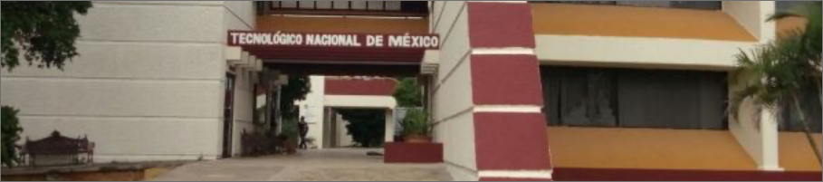

Objetivo Campo de trabajo Materias

La comunidad del Instituto Tecnológico de Mérida les da la más cordial bienvenida a esta Página Web, donde podrá encontrar información que le puede ser de gran utilidad.
Una de las metas propuestas al brindar este servicio es que todas aquellas personas que deseen consultar aspectos sobre la institución, carreras que ofrece, actividades, eventos, servicios generales, becas, reglamento de los estudiantes, o simplemente temas diversos; puedan encontrar aquí todo lo que necesiten.

Formar profesionistas líderes, analíticos y creativos con visión estratégica y amplio sentido ético, capaces de diseñar, implementar y administrar infraestructura computacional para aportar soluciones innovadoras en beneficio de la sociedad, en un contexto global, multidisciplinario y sustentable.

Empresas y organismos en todos los campos de la actividad económica, gubernamental y de educación, en donde se puedan optimizar los procesos al automatizar el manejo de la información, al desarrollar infraestructura de redes y proporcionar soluciones en las áreas de la tecnología computacional
 Semestre 1
Semestre 2
Semestre 3
Semestre 4
Semestre 1
Semestre 2
Semestre 3
Semestre 4